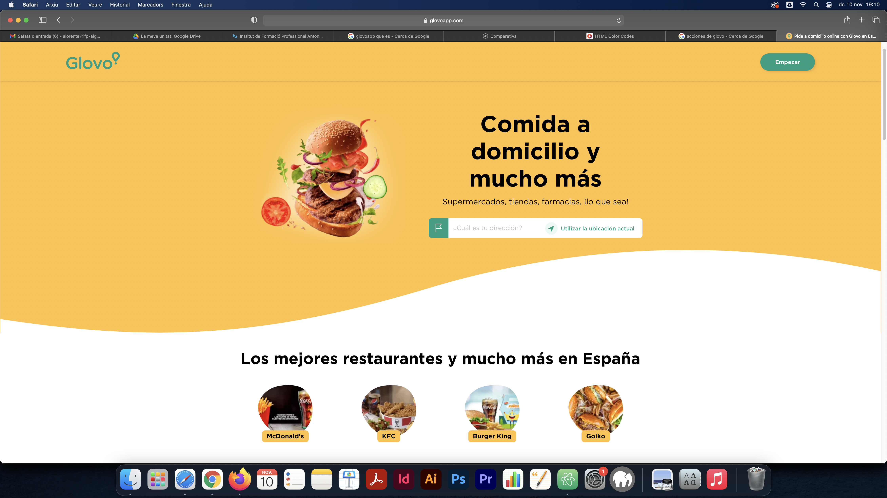
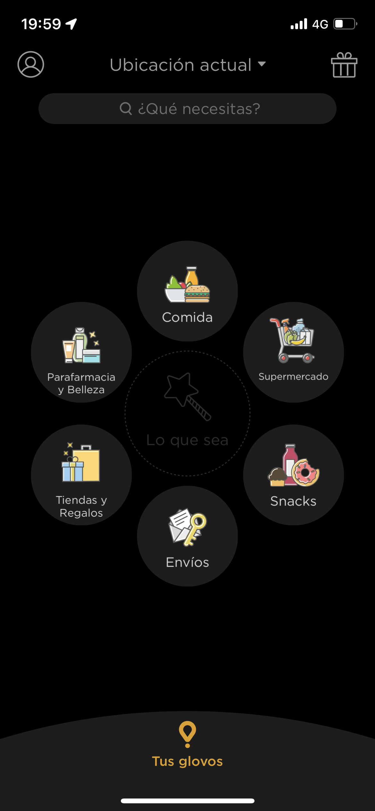
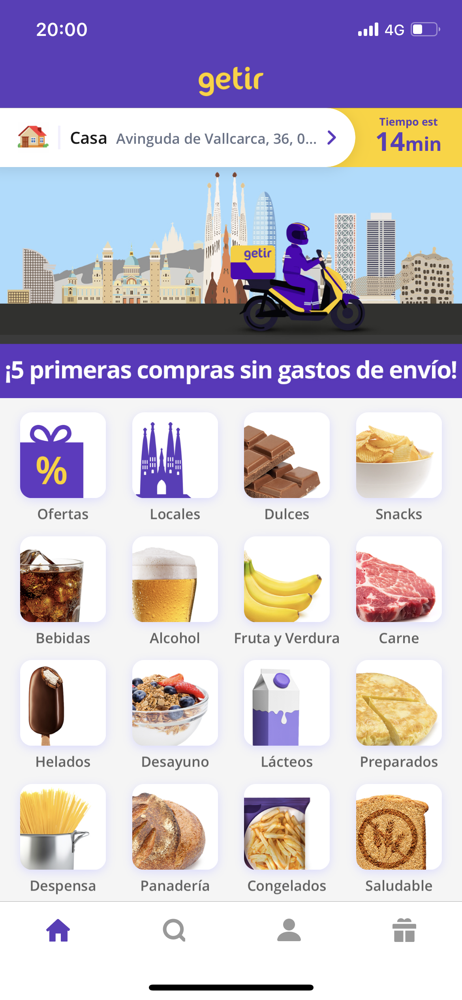
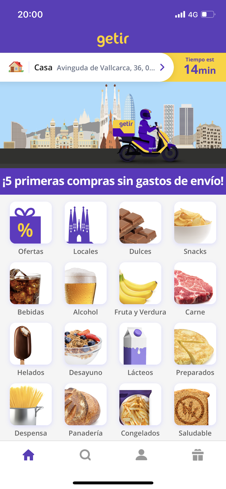

GLOVO
VERSIÓ ACTUAL 7.37.0
glovoapp.com
FUNCIONALITATS
Glovo és una empresa emergent creada a Barcelona l'any 2015. Es dedica a la compra, la recollida i l'enviament de comandes en menys d'una hora a través de missatgers independents coneguts com a "glovers". Actualment, són presents a més de 20 països.
Glovo ofereix servei a molts indrets de l'Estat espanyol, basa els seus serveis en menjar a domicili, tipus restaurant, que el diferencia de l'aplicació amb la que l'estem comparant, a més a més també podem trobar productes de llar, així com detergents, ambientadors etc. També permet fer compres directament a supermercats, on les teves comandes et seran portades a casa.
Com a avantatge davant Getir, on només pots comprar el que en aquell moment tenen en stock, amb Glovo pots comprar el que vulguis en el moment que vulguis si esta disponible a la teva zona de residència o rodalies. També te la opció de recollir-ho a la botiga o restaurant on hagis demanat.
INTERFÍCIE
 FINANÇAMENT
Globo es una empresa que es financia a través de les comandes que fa la gent, una part del que costa la comanda va dirigit al restauarn t o supermercat on es fa la compra, una altre al repartidor i el que queda s'en va directe per l'empresa. A més a més Glovo ha sortit al mercat bursatil i d'aquesta forma aconsegueix financiació d'inversors que confien en el creixement de l'empresa i en el seu projecte.
COMPANYIA
L'empresa va començar a operar a Barcelona al març de 2015, on té la seu amb quasi 500 treballadors. Basada en l'economia on demand, uneix persones que disposen de temps i d'un vehicle amb altres que en necessiten un per un breu període. Fundada pel barceloní Oscar Pierre juntament amb el seu soci Sacha Michaud, ha aconseguit ja més de 7M€ en les tres rondes de finançament que han fet fins ara.
L'aplicació permet demanar el que es vulgui. Disposa de diferents categories on es reparteixen els productes d'establiments que treballen amb Glovo. Una vegada fet el "Glovo" (comanda), el client pot veure mitjançant la geolocalització quin missatger li farà el servei i el recorregut que realitzarà. Tot en temps real. Els mitjans de transport utilitzats pels missatgers són la bici i la moto.
ALTERNATIVES
Com a principals alternatives a aquestes dues opcions d'empreses repartidores de productes podem trobar empreses com: Uber eats, Deliveroo o Just Eat. Aquestes empreses ofereixen serveis semblants als que podem trobar fent us de Getir o Glovo, amb els seus respectius avantatges i inconvenients i amb algunes diferències, que poden fer que escollim un o altre servei.
Uber eats és una subdivisió de l'empresa principal Uber, en aquest cas Uber ja es una empresa internacinal molt establerta a tot el món, que ja comptava amb un cert renom i ha aprofitat per satisfer una de les altres demandes del mercat: el menjar a domicili, d'aquesta forma i aprofitant una gran capacitat econòmica per fer estratègies de marketing profitoses, ha aconseguit establir-se en el mercat amb gran facilitat.
AVANTATGES
- Els enviaments són molt segurs i solen arribar en els plaços previament establerts.
- Hi ha una gran varietat de productes ofertats.
- Pots demanar menjar dels restaurants que més t'agradin.
- Pots demanar tot tipus de productes a qualsevol hora i lloc.
INCONVENIENTS
- Els temps d'enviament són força més lents que en el cas d'altres aplicacions.
- Els contractes amb els repartidors solen ser força precaris.
- no trobem tantes ofertescom en altres aplicacions.
 
